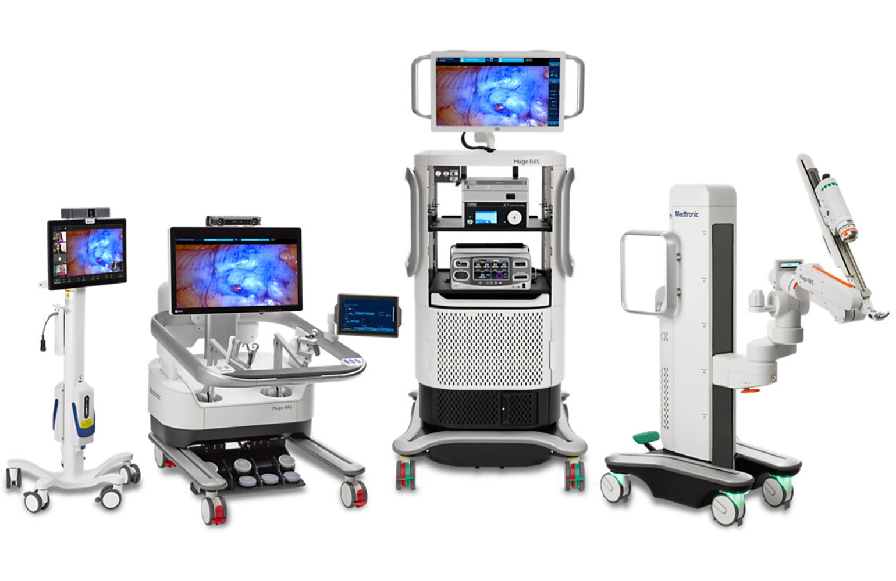

Управление по санитарному надзору за качеством пищевых продуктов и медикаментов США (FDA) выдало Medtronic расширенное разрешение по процедуре 510(k) на применение роботизированной хирургической системы Hugo в общей хирургии. В допуск вошли все верхнеабдоминальные операции — удаление жёлчного пузыря (холецистэктомия), желудочное шунтирование по Ру, вентральная грыжа, резекция тонкой кишки, — а также паховая грыжа и удаление аппендикса. По оценке Medtronic, на эти вмешательства приходится около 3,5 млн операций в год в США — больше половины всех мягкотканных операций страны.
Hugo — модульная система на тележке: хирург может подключать ровно то число роботизированных рук, которое нужно под конкретную операцию, а не всегда все четыре. Это главное отличие от доминирующего на рынке американского робота Da Vinci. Medtronic получила европейское CE-маркирование на общую хирургию ещё в 2022 году и использовала накопленные за рубежом клинические данные вместе с собственным американским исследованием по лечению грыж — такой «двойной путь» регулятор счёл убедительным. Урологию в США Hugo получил в декабре 2025 года, а к концу финансового года количество операций по всему миру превысит 50 тысяч.
Параллельно Medtronic открыто строит стратегию вокруг ИИ: по словам генерального менеджера направления роботизированной хирургии Раджита Камала, искусственный интеллект нужен на всех трёх этапах — предоперационное планирование по снимкам, распознавание анатомических структур прямо во время операции и оптимизация восстановления после неё. Летом компания уже получила одобрение FDA на платформу Touch Surgery Aide с компьютерным зрением, которая подсказывает хирургической бригаде в реальном времени по видео из операционной. Следующие шаги — клиническое исследование Hugo в гинекологии и инвестиции в сторонние технологии: в сентябре Medtronic вложила $700 млн в Cornerstone Robotics и получила права на дистрибуцию её системы Sentire на ряде рынков.
Рынок хирургической робототехники годами был фактически монополией Da Vinci, и выход второго игрока с допуском к самому массовому сегменту операций — удаление жёлчного, грыжи, аппендикс — реально меняет переговорную позицию больниц. Medtronic прямо говорит, что приоритет №1 — доступность: финансовые модели такие, чтобы систему могли позволить себе не только флагманские центры. Для пациентов итог простой: роботизированная операция перестаёт быть элитарной услугой и становится рутиной.